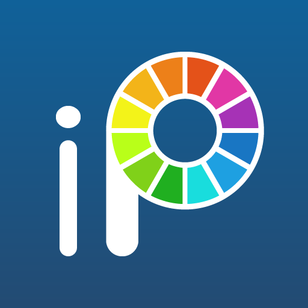
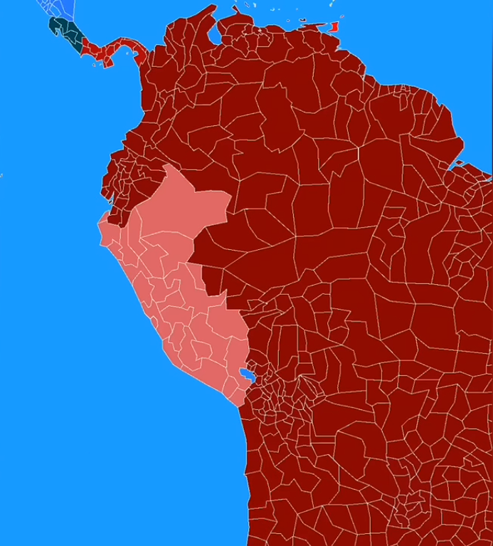

Hacer los Countryballs(En ibis Paint es para hacer personalizados)

La voz en los videos
Editar los videos,Elige el que prefieras
2° PASO
Abres Provincias del mundo y abres el candado
Luego pones el boton claro
Luego aprietas,ya sea:Cambio Provincia,Pais o Colocar pais y personalizas tu mapa

3° PASO
Hacer los Countryballs
En esta primera parte la puedes saltar si quieres Countryballs personalizados,
Abre la app de Countryballs stickers y busca los Countryballs que quieras y presiona el boton de descargar
y para agregar la bandera que quieras pon en el boton de añadir imagen y pones la imagen a tu gusto
En esta parte lo haras con ibis paint x,si lo sabes usar(si no ve un tuto),se te hara facil
Creas un trazo,descaragas este pack de banderas
Y luego creas los accesorios y ojos
4° PASO
La voz de zuiera
Abres la app,buscas la voz que quieras,escribe tu audio,reproducelo y descargalo del boton
5° PASO
Editar los videos
En esta parte aprenderas a editar en capcut(tienes que tener experiencia en capcut para hacerlo),primera importas el fondo,luego el countryballs con sus ojos(si estan pegados con el CB No es necesario)
E importas sus voces y cambias los mapas segun el video,importas el CB como sticker y cuando hable pones la animacion de bucle,la que quieras
y pones los movimientos
En esta es con alight motion,en este caso,el lo mismo que capcut,solo que con algunas diferecias
Para que hable pones en efectos de la imagen y pones el de deformacion, y lo ajustas segun como habla
Se que no me explique mucho en lo ultimo pero tienes que saber mas o menos de edicion